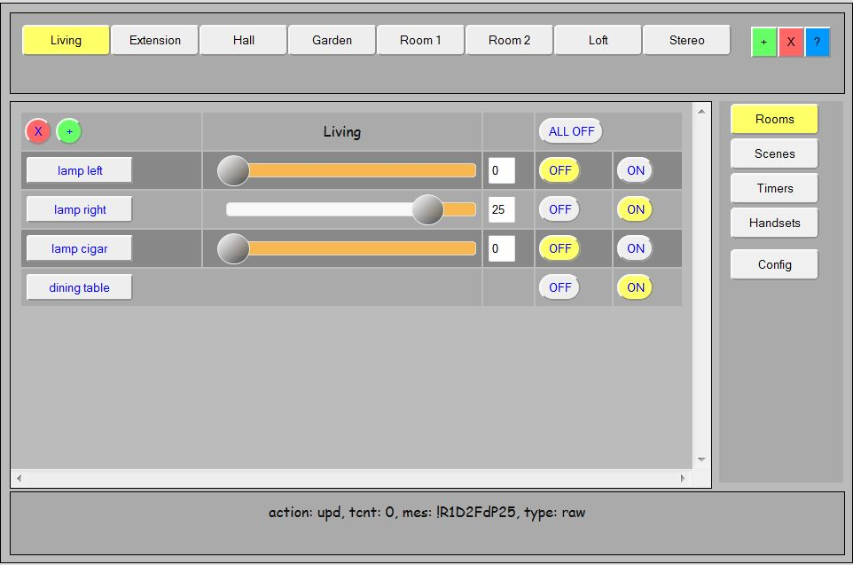
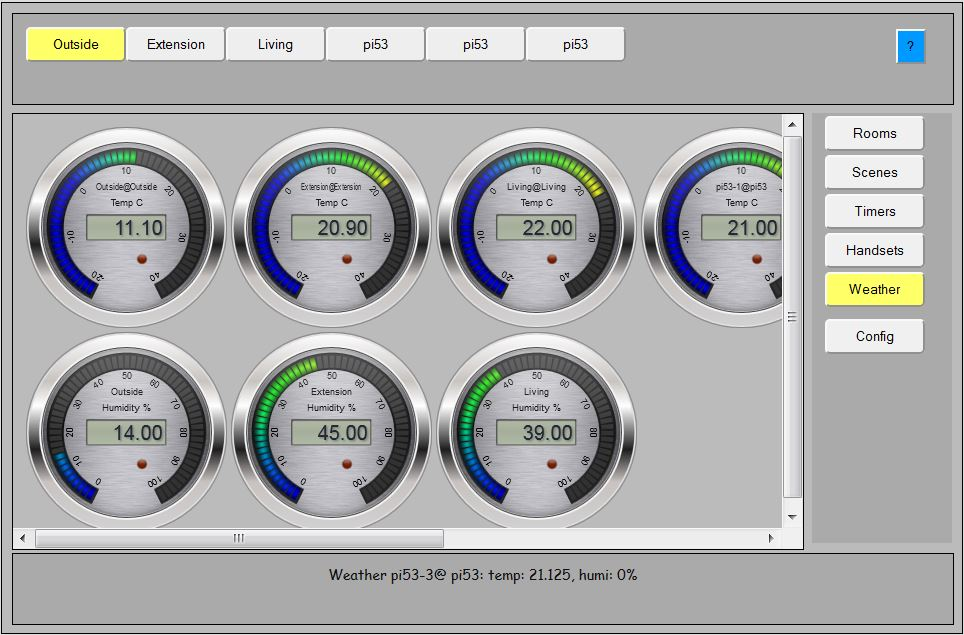

You can find its GIT repository on https://github.com/platenspeler, documentation on http://platenspeler.github.io
This is where I developed LamPI for initially. It will control your light switches and your dimmers and your other switches as well (so your stereo too).

As you see, the GUI interface is designed to operate (and manage) all tasks for the connected devices and minimize the need for manual changing of configuration files etc. let alone making configuration changes at compile time.
Support for weather sensors was added to LamPI.

Actually, what you see is just a small example of what "steel" can do for your project. The library is highly customizable so you can make your own background, color an other settings if you like.
What you see below is the first version for LamPI 1.8 with weather support. It does support weather sensors of UPM that transmit temperature and humidity values back to the LamPI-deamon.php process which are then broadcast to all connected clients. And as you see, the client will display the temperature (top row) for outside, the extension of our home and the living room. On the second row it will display the humidity for these three rooms.
The definitions of sensors are stored in a configuration file.